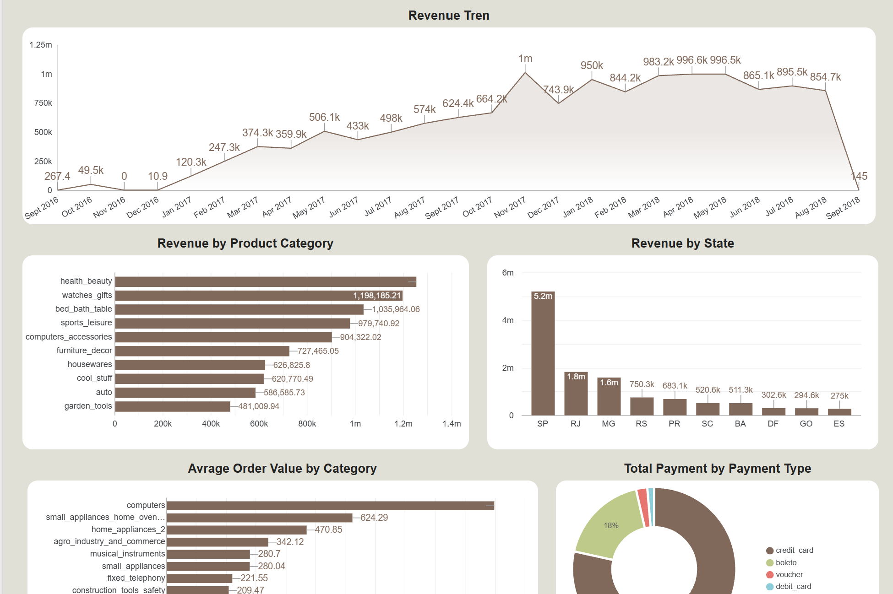
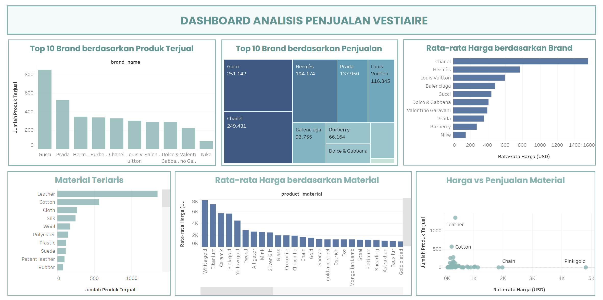
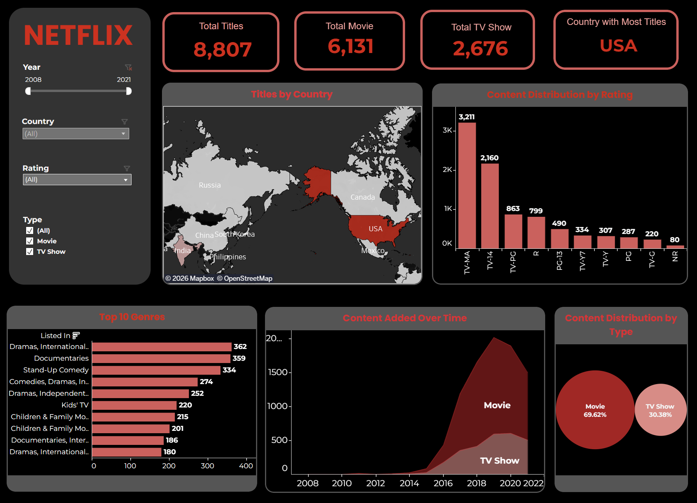
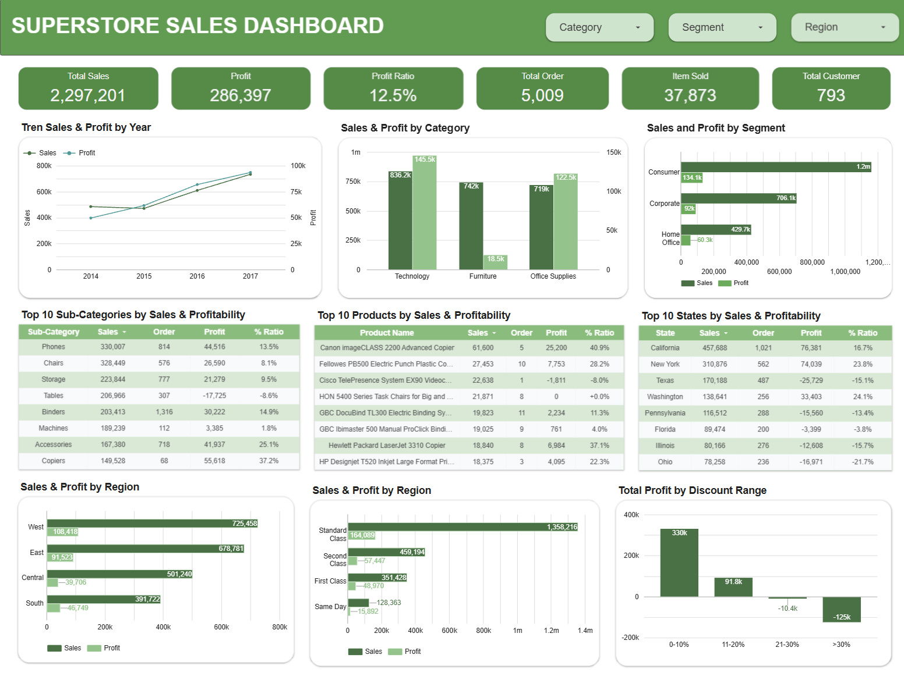
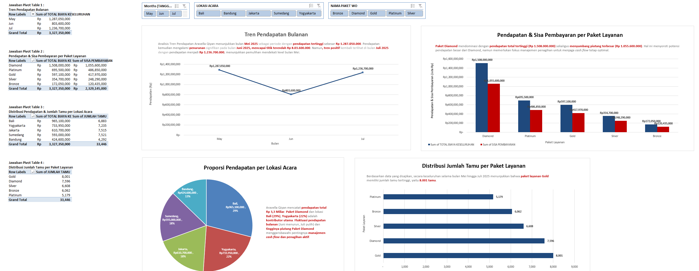
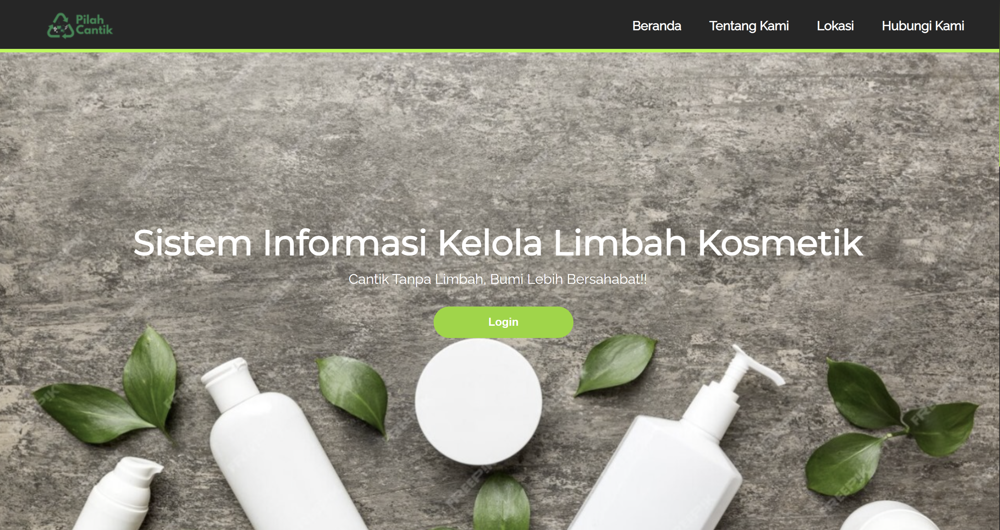

INFORMATION SYSTEM GRADUATE
Hi, I'm Filda
Dwi Meirina
👋
Lulusan Sistem Informasi yang memiliki ketertarikan pada bidang Data Analytics dan Business Intelligence, dengan pengalaman melalui program Studi Independen dan proyek akademik dalam pengolahan data, Exploratory Data Analysis (EDA), visualisasi data, serta pembuatan dashboard menggunakan Looker Studio dan Tableau.
01 / ABOUT ME
Background & Analytical Interest
Saya merupakan lulusan Sistem Informasi Universitas Pembangunan Nasional “Veteran” Jawa Timur yang memiliki minat pada bidang Data Analytics dan Business Intelligence. Saya tertarik mengolah dan mengeksplorasi data untuk mengidentifikasi pola, memahami permasalahan, serta menghasilkan insight yang relevan bagi pengambilan keputusan.
Melalui proyek akademik, pelatihan, dan proyek praktis, saya mengembangkan kemampuan dalam data preparation, exploratory data analysis, serta visualisasi data menggunakan berbagai tools analisis dan dashboard. Saya juga memperhatikan ketelitian dalam pengolahan data agar informasi yang disajikan lebih terstruktur, mudah dipahami, dan sesuai dengan tujuan analisis.
Saya ingin terus mengembangkan kemampuan teknis dan analitis melalui proyek yang berorientasi pada permasalahan bisnis. Saya berfokus pada bagaimana data dapat digunakan untuk mengevaluasi kinerja, mengidentifikasi peluang perbaikan, dan mendukung pengambilan keputusan yang lebih terukur.
Technical Skills
Mengolah & memvisualisasikan data dengan berbagai tools.Business Insights
Mendukung keputusan bisnis melalui analisis data.02 / Skills & Tools
Skills & Tools
Tools dan kompetensi yang saya pelajari dan gunakan dalam proyek akademik, Studi Independen, serta pengalaman internship.
DATA ANALYSIS
Fondasi pengolahan, pembersihan, dan analisis data eksploratif
SQL
 PostgreSQL
PostgreSQL
 Microsoft Excel
Data Cleaning
Data Validation
Exploratory Data Analysis
Microsoft Excel
Data Cleaning
Data Validation
Exploratory Data Analysis
PostgreSQL
Microsoft Excel
Data Cleaning
Data Validation
Exploratory Data Analysis
DATA VISUALIZATION & BI
Perancangan dashboard bisnis dan visualisasi data interaktif
 Tableau
Tableau
 Looker Studio
Looker Studio
 Metabase
Metabase
OTHER TOOLS
Tools pendukung analisis data, pemrograman, pengolahan statistik, kolaborasi, dan perancangan.
 Python (Basic)
Python (Basic)
 Google Colab
Google Colab
 Microsoft Office
Microsoft Office
 GitHub
GitHub
 Figma
Figma
 Visual Studio Code
Visual Studio Code
 XAMPP
XAMPP
 FastAPI
SPSS
FastAPI
SPSS
PROFESSIONAL SKILLS
Kemampuan pendukung yang dikembangkan melalui proyek dan kepanitiaan.
03 / PROJECTS
Featured Projects
Kumpulan proyek akademik, Studi Independen, dan eksplorasi mandiri yang berfokus pada analisis data, pengembangan dashboard interaktif, serta visualisasi untuk menghasilkan insight yang mendukung pengambilan keputusan.
Total 6 projects

DATA ANALYTICS & DATA VISUALIZATION
Brazilian E-commerce Analysis
Analisis data transaksi e-commerce Olist untuk mengeksplorasi pola pesanan, performa penjualan, dan perilaku pelanggan guna memperoleh insight dan rekomendasi untuk suatu perusahaan atau bisnis.
Python
Looker Studio

DATA ANALYTICS & DATA VISUALIZATION
Vestiaire Fashion Data Analysis
Eksplorasi data fashion preloved untuk mengidentifikasi tren pasar dan memperoleh insight bisnis melalui visualisasi data interaktif.
Python
Tableau

DATA ANALYTICS & DATA VISUALIZATION
Netflix Content Analysis
Analisis katalog Netflix untuk memahami distribusi Movie dan TV Show berdasarkan negara, genre, rating, serta tren penambahan konten.
Python
Tableau

DATA ANALYTICS & DATA VISUALIZATION
Superstore Sales Performance Analysis
Analisis data penjualan Superstore untuk mengevaluasi performa bisnis berdasarkan tren penjualan, keuntungan, kategori produk, segmen pelanggan, wilayah, serta pengaruh diskon terhadap profitabilitas.
Python
Looker Studio

BUSINESS DATA ANALYSIS
Aravella Qiyan Wedding Studio
Pengolahan dan analisis data pemesanan jasa pernikahan untuk mengevaluasi pendapatan, performa paket Wedding Organizer, pembayaran pelanggan, serta tren transaksi menggunakan Microsoft Excel.
Microsoft Excel

WEB DEVELOPMENT & DATABASE MANAGEMENT
 PHP
PHP
 MySQL
MySQL
 JavaScript
JavaScript
Bank Sampah Management System
Pengembangan website untuk membantu pengelolaan operasional bank sampah, mulai dari pendataan nasabah, pengelolaan jenis sampah, hingga pencatatan transaksi penyetoran sampah secara terstruktur.
PHP
MySQL
JavaScript
04 / Experience
Experience
Tools dan kompetensi yang saya pelajari dan gunakan dalam proyek akademik, Studi Independen, serta pengalaman internship.
STUDY INDEPENDEN PROGRAM
September – Desember 2024
Data Analyst
PT Cerdas Digital Nusantara · CAKAP
Mengikuti Program Studi Independen Bersertifikat Data Analyst yang diselenggarakan oleh Cakap dengan fokus pada pengolahan, analisis, dan visualisasi data untuk mendukung pengambilan keputusan berbasis data. Mempelajari dan mempraktikkan penggunaan Microsoft Excel, SQL, dan Python untuk mengolah data, melakukan Exploratory Data Analysis (EDA), serta mengidentifikasi pola dan tren. Program ini juga mencakup analisis bisnis, visualisasi data menggunakan Looker Studio, dan pengerjaan proyek akhir sebagai penerapan keterampilan analisis data.
Capstone Project :
Capstone Project: Menganalisis dataset menggunakan Python untuk pengolahan data, mengeksplorasi data untuk menemukan pola dan tren, serta menyajikan hasil analisis dalam bentuk visualisasi dan dashboard menggunakan Google Data Studio
FREELANCER
Juni 2026 – Sekarang
Staff Administrasi
Ekspedisi Karunia Jaya
Mendukung kegiatan administrasi Ekspedisi Muatan Kapal Laut (EMKL), meliputi pembuatan tagihan (invoice) pengiriman, menghitung volume barang berdasarkan ukuran atau informasi pada surat jalan, serta melakukan pencatatan dan rekapitulasi barang yang dikirim berdasarkan container. Memastikan data barang tercatat dengan jelas untuk memudahkan proses pengambilan barang di tempat tujuan.
KEY CONTRIBUTIONS :
Administrasi Tagihan
Perhitungan Kubikasi Barang
Rekapitulasi Data Pengiriman
Pengelolaan Data Kontainer
05 / CERTIFICATIONS
Certifications
Sertifikasi dan kompetensi profesional
PT Cerdas Digital Nusantara · CAKAP
Studi Independen Bersertifikat — Data Analyst
Excel
SQL
Python
Google Data Studio
BNSP
Junior Web Programmer
HTML
CSS
JavaScript
PHP
UPA Bahasa UPN Veteran Jawa Timur
English Profeciency Test (EPT)
Listening Cornprehension
Structure And Written Expression
Reading Comprehension Amf Vocabulary
Excelab Learning
Uji Kompetensi Microsoft Excel
Microsoft Excel
Lookup Functions
Logical Formulas
Data Transformation
Compliance & Risk
Dashboard & KPI
PivotTable
Conditional Formatting
Interactive Slicer
GET IN TOUCH
Let's Connect
I'm open to opportunities to learn, collaborate, and grow in the field of Data Analytics and Business Intelligence.
EMAIL